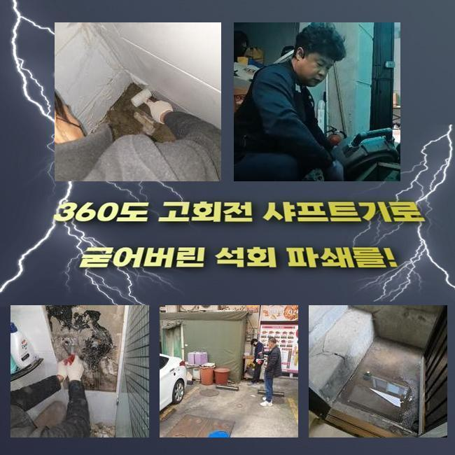
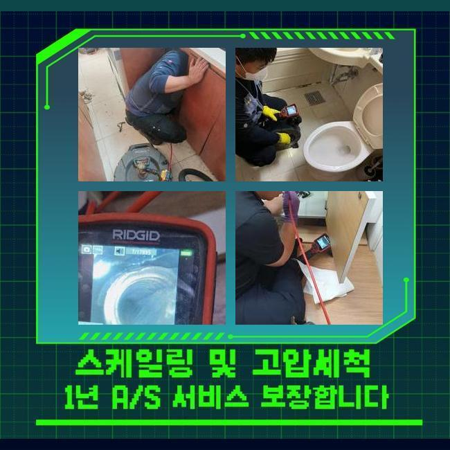
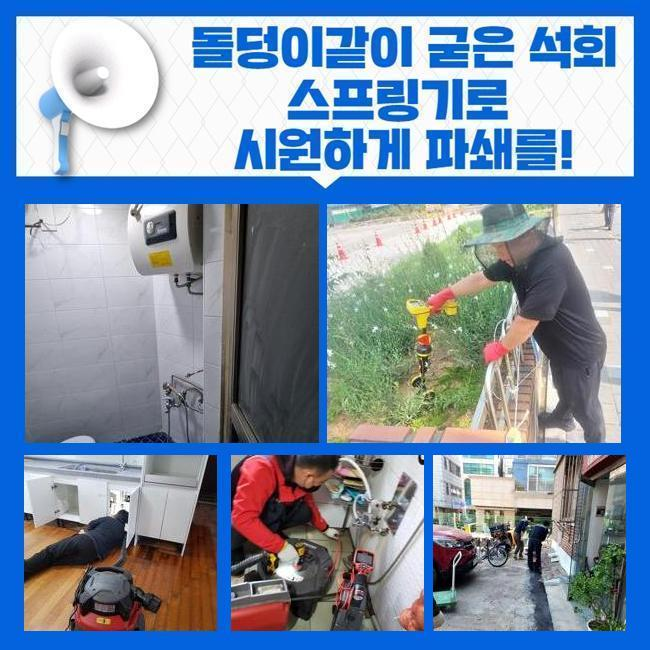
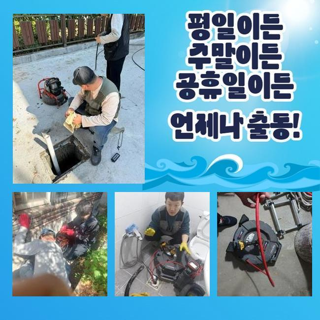
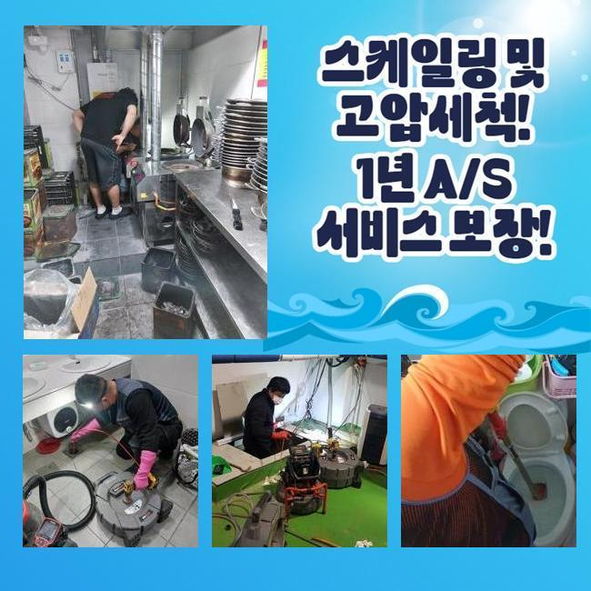
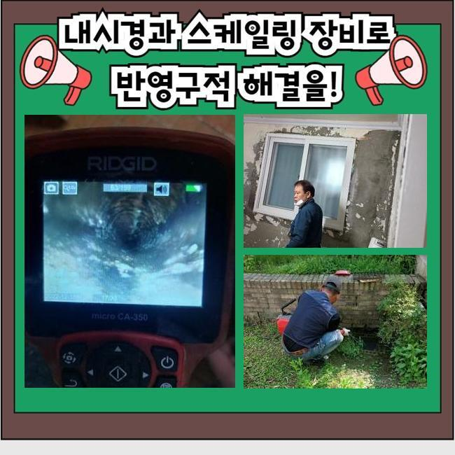
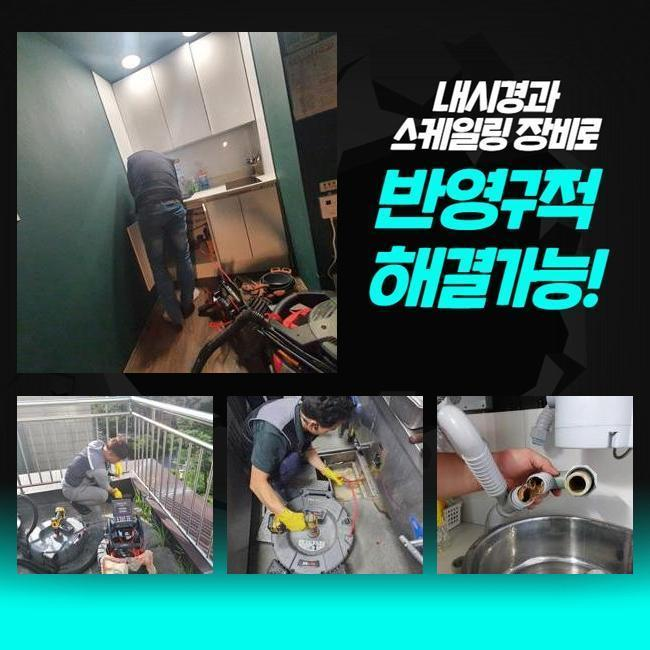

🏠 고양시 대장동화장실막힘 도내동 악취차단 해결방법
고양 대장동 하수구막힘 전문 시공 후기

📋 작업 개요
- 위치: 고양 대장동, 대장동, 고양
- 서비스 유형: 하수구막힘, 배관막힘, 집수정막힘, 뚫는업체, 배관청소, 고압세척, 악취차단
- 작업 일시: 2024. 10. 23. 11:25
- 업체명: 하수구수사대 (010-5615-2118)
🔍 문제 상황
고양시 대장동화장실막힘 도내동 악취차단 해결방법
집에 설치된 배관을 볼 때 집안에서 배출되는 전체 물질을 내려보내는 곳이라고 예측하시곤 하지만 실은 오로지 집에서 쓰는 생활하수만을 폐기해야만 하는데요
많은 사람들이 하수구를 쓰며 물건가지도 막 집어 넣다보니 통로가 조금씩 더러워지다가 누적되면 더 어려운 일이 폭발하듯 생겨나게 되는거죠
이번 작업지는 내부에 찬 슬러지때문에 심각한 일이 일어나게 된 상황이라고 얼른 고쳐달라고 말씀하셔서 재촉하여 달려간 장소입니다
하수구 시설의 트러블을 통쾌하게 풀어나가고자 한다면 상황에 대한 점검부터 실시하는 것이 일반적입니다
장사를 이어가는 상가에서 잘나가던 물이 턱 막힌 듯 배출되지 않고 고여서 역행의 증거까지 있다고 전해주셔서 출장을 갔습니다
출장 시에 활용하는 준설차가 있는데 여러 장치가 담긴 차량은 막힌 상황을 처리할 때 유용하게 쓰이며 난감한 불시의 상황들이 생겼을 때도 여러 옵션을 제공합니다
대형 기기부터 소형 툴까지 두루 구축되어있는 차로 이동하여 도착할 수 있었고 막힘 없이 관찰 장비부터 내려서 확인하게 됐네요
지금 어떤 문제가 있는지에 대한 숙지가 필수 조건이므로 배관을 관측하는 내시경을 운용해서 검사를 해봐요
문제가 생긴 이유와 수준을 파악해보니 요리 중에 들어간 유분과 부산물 때문에 봉인된 상태임을 알게 됐고 고객님께 소식을 전했습니다
어떻게 대응할지에 대한 계획도 짚어드리고 의뢰인분의 허가가 떨어지면 착수하는데요

🔎 원인 분석
💡 전문가 진단: 정밀 진단 장비를 사용하여 슬러지의 고착 여부를 판명하고 타격/세척 작업을 실시했습니다.
하수구 구멍으로 하수가 치고올라오면 일반적으로는 메인이 되는 배관시스템도 오염되었을 경우가 우세합니다
따라서 집수정으로 연계되는 바운더리의 수로까지 고압세척을 한방에 이어가야 합니다
과거에 지어진 건물이라서 장애물이 있는 곳에 배관이 설치된 상황이라서 꽤나 도전적일 것이다 싶더라고요
이번 작업을 맡게된 작업자로서 잘 손봐드려야 했으므로 설치지점을 타공하여 모든 사건의 발단이 됐을지 모르는 집수정부터 면밀히 탐색했습니다
대강 추측했던 모습처럼 집수정이 고장난 상태임이 보였고 동시에 빗물을 담당하는 우수관로가 같이 시공된 것을 알 수 있었네요
개별설치가 원칙이지만 최근 지어진 건물이 아닌고로 같이 서립이 된 것 같았습니다
동시에 스케일링을 하기위하여 물줄기를 분사할 호스를 배치해서 세척하는 활동을 출발했는데 연이어 작업을 해보니 압도적인 이물질의 수량이 물밀 듯 밀려오더라고요
막힘의 정도가 엄청난데 지금에야 하수구의 곤란이 물 위로 올라온 것이었어요
끈적하게 눌어붙어 있는 기름슬러지가 계속 유발되었고 내부 정화가 완료될 때 까지 업무를 계속 지속해주었습니다
무엇이 잘못되었는지를 짚어내서 효율적인 전략을 수립해준 이후에 본격적인 작업에 착수하는 것이 올바릅니다
명확한 증거없이 청결 작업을 실시한다면 원만하게 완화하지 못하는 것은 당연하고 게다가 마찰과 마모를 야기하게 됩니다

🔧 작업 과정
무리한 대처로 강력한 타격감을 입게 되면 새로 갈아야할 수 있어서 엄청난 시공비용 지출을 감수해야 할 것입니다
딱 보기에는 하수관이 어떤 자극에도 거뜬하다 싶으시겠지만 지열을 받으면서 배관 자체의 크기 변화를 늘 겪게 되기때문에 밀도가 약해지고 맙니다
항상 조심하면서 집중도있게 업무를 해나가고 신축이 아닌 구축인 건물을 대할 때에는 더욱 철저하게 주시하며 일해요
청소하고 배출된 오염원의 내역을 고객님께 보실 수 있게 해드리고 지금부터 어떤 과정으로 청소해주면 유익할지 조언해 드렸습니다
하수구를 자꾸만 막히게 만드는 오염물질들과 조리 후에 남겨진 오일성분은 이제는 막 버리면 곤란하다는 사실도 반복해서 강조했습니다
식당이라는 업종의 특성이 있으므로 물도 기름도 많이쓰다보니까 유지관리가 영 힘들겠지만 역부족이라는 생각으로 외면하는 게 아니라 주기적으로 건강을 살피면서 막힌 쪽은 없나 체크해야하죠
작업의 마감에 이르러서는 혼탁하게 오염됐던 하수가 배출이 되었고 투명한 물이 출수되는 동작까지 점검을 하고 끝냈습니다
길지 않은 작업만으로도 해소를 볼 수 있었지만 간단해보이겠지만 하수는 워낙 복잡하게 꼬여있다보니 관련한 지식이 풍부하게 있는 업체의 지원을 받아야 합니다
장비는 구비했다고 치더라도 아무렇게나 안으로 배치해서 무리하게 밀어붙인다고 극복이 되는 것이 아니고 다년간의 전문성과 풍부한 장비 라인업이 뒷받침을 해줘야만 합니다
장기간 내버려 둔 탓에 부식한 토양과 기름 덩어리로 고약한 냄새까지 올라와서 작업을 더욱 서둘렀습니다
건물의 내측이 아니고 바깥이라서 고객님의 어려움이 빚어지지 않았기에 다행이기는 했습니다
발생한 기름덩어리는 쓰레기봉투에 넣어줬고 물을 뿌려서 주변 구역에 남겨진 찌꺼기를 처리하며 생성된 잔재도 깔끔히 처리해요
악취 입자는 공기 중에 확산되어 소강되겠지만 덩어리진 노폐물의 경우에는 제대로 치워내지 않으면 그자리에 잔여할 것이므로 마저 처리를 해드립니다
뚫는 작업을 실시하면 막힘만 해결하고 가는 줄 아실텐데 사실은 근처의 정돈까지 도맡고 있으며 내버려두면 썩으면서 고약한 악취가 퍼지니 사전에 방지하는 것입니다
꼼꼼함 없이 허술하게 수리하는 건 아닐까 싶은 우려는 하지 마시고 저희에게 일임해주셔도 됩니다!
하수구 통수가 곤란해지는 상황은 모든 분들이 한 번 이상은 맞닥뜨리게 될 사안인데 혼자 힘으로도 고칠 수 있는 수준이나 이를 넘어선 상황들로 나뉘게 됩니다
이와 같은 경우의 수들을 감안해서 괜히 고객님 선에서 극복해보겠다고 진땀 빼지 마시고 업체의 서비스를 십분 활용해서 완전히 고쳐보시기를 바랍니다


✅ 작업 완료
강한 물을 계속해서 쓰면 뚫리진 않을까 하는 헛된 희망으로 사태를 외면하시기도 하지만 손해를 더 키워버리게 되는 행동이 될 수 있습니다
막힘이 시작될 때부터 맡겨주시면 단시간에 매듭지을 수 있는 일도 여러 절차도 거쳐야 하고 재정 부담도 폭증하는 대형 이슈까지도 연속적으로 벌어지게 됩니다
하수 폐기시설의 경우에는 잇따라 장애가 생기면 안과 밖의 시설에서 진입해서 정화를 거치기는 하나 가볍게 내부 하수구가 막혀도 다수의 기계들을 적시적소 상용하여 문제를 풀어가고 있습니다
전문 청소를 받으신 이후에 침전물들이 축적될 일이 없도록 신경만 조금 써주시더라도 하수구 속의 장애물 발생이 훨씬 줄어들 수 있습니다
추가 질의 사항이 있으시면 전화상으로 안내가 가능하며 작업의 스타트를 끊은 후에도 구체적 설명이 필요하실 때 그 순간에도 질문하시면 성실하게 설명을 덧붙이면서 설명을 해드리도록 하겠습니다




⚠️ 하수구 배관 막힘 예방 및 관리 가이드
- ✅ 머리카락, 비닐, 물티슈 등 물에 분해되지 않는 이물질은 하수구 유입을 절대 금지해 주세요.
- ✅ 하수구 거름망을 씌우고 모여진 이물질은 주기적으로 쓰레기통에 바로 비워주셔야 합니다.
- ✅ 배관 노후가 심할 경우 이물질이 더 쉽게 걸리므로 주기적인 배관 세척(고압세척 등)을 권장합니다.
- ✅ 작업 후 1년 이내 재발 시 하수구수사대에서 무상 A/S 보증 서비스를 제공합니다.
💡 핵심 정리
- 확실한 장비 작업(내시경 점검 및 샤프트 스케일링)으로 원인을 뿌리 뽑습니다.
- 작업 후 1년 이내에 동일한 부위 재발 시 100% 무상 A/S 서비스를 보장합니다.
- 서울 · 경기 · 인천 전 지역에 24시간 언제든 긴급 출동할 수 있도록 항시 대기 중입니다.
❓ 자주 묻는 질문 (FAQ)
🚨 고양 대장동 하수구막힘 문제로 고민이신가요?
정확한 원인 진단과 확실한 시공으로 재발 없는 해결을 약속드립니다.
24시간 긴급 출동 | 서울 · 경기 · 인천 전지역 | 1년 내 재발 시 무상 A/S